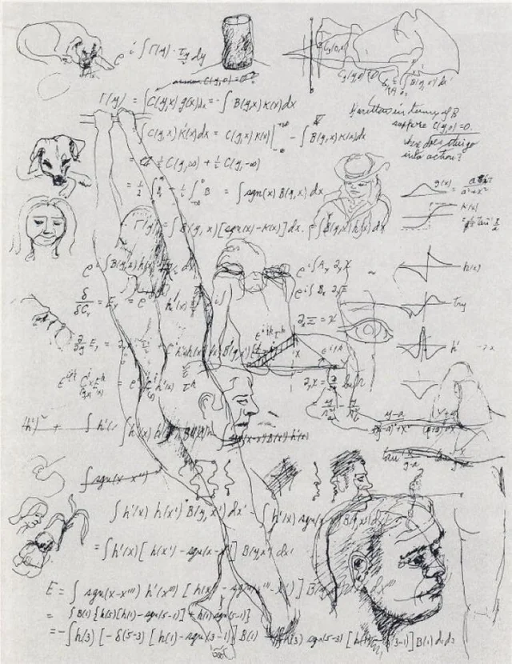

March 2026
Test Post

This is just me testing out what it is like to make a blog post. I do not know how frequently I will put out these posts but I want this to be a place where I can share my very flawed but personal thoughts. I would like to be able to reflect on how I thought about things and some of the fun topics/ideas I have been able to explore.
I have an image on the right of a drawing done by Richard Feynman, I believe, while he was in a bar. It was later in his life when he became interested in art. I am not the biggest fan of Feynman, but I really do love the way he spoke about physics. His views on the importance of curiosity have largely inspired the way that I think about being curious. I also think this drawing he made, with all the equations and math around it, is a pretty apt visual for why I love physics so much.